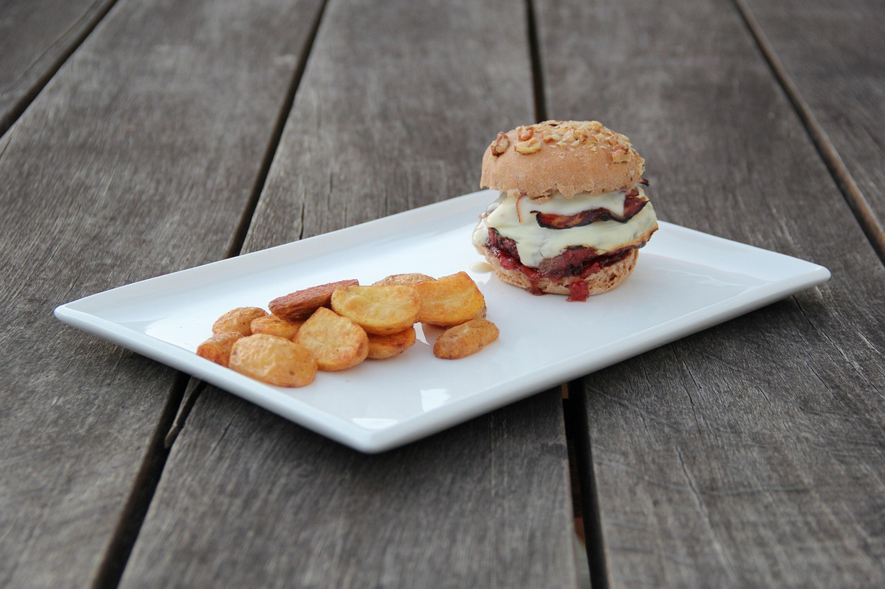
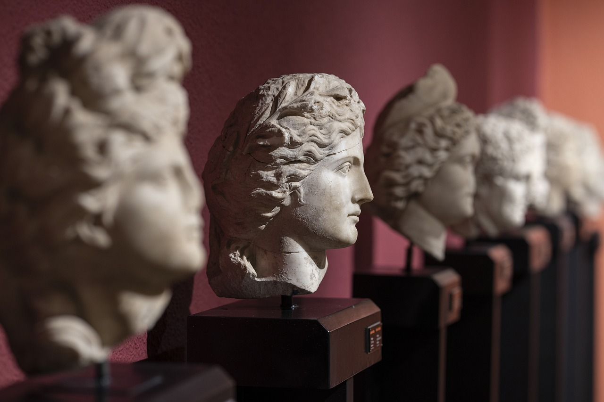

Burnley Community Arts Festival will show the best of Burnley! We work closely with independent organisations to better represent the incredible community
that lives here and, we know that without representation from larger companies it can be hard to get your hard work out there!
Our goal is not only to bring the arts back to Burnley, but also to bring your local artists into the spotlight where they belong!
Below you can find our goals for our community, how you can get involved, and even a poster that will take you to our sign up page!


Like we've said, our aim is to represent YOU, no matter if you live in Burnley or beyond, we are here to showcase the diversity of our home! By welcoming small
and independent creators and artists, we can give you an even better exerience!
We know that it's often hard to find yourself represented in larger events, and that's what we're here to change! We plan to create a diverse, inclusive environment
where everyone feels safe, and to foster the community that makes Burnley so special!
There's so many ways to get involved with our festival! Whether you just come as a visitor to support your local arists, or want to help set up, every little helps!
Here's some ways you can get involved!